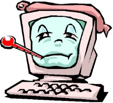
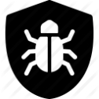
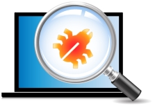

 WHAT IS A COMPUTER VIRUS? A computer virus is a program that shares some of the aspects of biological viruses: - it is dangerous - it is small - it is difficult to detect - it is self-replicating Viruses are propagated through the internet (email, downloads, etc), networks and disks. Once a virus is present on a system, it will try to spread itself. It might, for example, email itself to all of the contacts in a user’s address book. Viruses can cause different types of damage. They can: - destroy data - drastically reduce system performance - use contaminated systems to send spam or attack another systems - open backdoors to give remote users access to the computer To get rid of a virus, you need to locate the file that has been infected and delete it. In order to protect your system against viruses, you should install an anti-virus program. We advise you to install real-time anti-virus software, such as Kuranin Anti-Ransomware. Kuranin Anti-Ransomware detects and removes viruses before they can infect your system.
 We have created the best application for the protection of your personal data and your computer, which harmoniously combines lightness, ease of use and practicality at the same time. Download our free Anti-Ransomware right now and feel safe! Real-time protection mode, the firewall, heuristic analyzer, and a large number of useful tools in one product!
Real-Time Protection & Firewall & Web Protection & Scanning Virus & Scanning Registry & Scanning Hidden & Scanning Invalid PE & Empty File & Auto Scan USB & Malware by User & Win-Force & Configurations & Cured Virus & Check And Update & Scan Archive (ZIP & RAR) & Process Manager & Startup Manager & Keylogger Detector & Filter Scanning by Size & Filter Scanning by Extension
KurSecurityProtection Laboratory of day-to-day work hard to ensure that as many threats have been made in our antivirus database. Also, we collect anonymous user data, which is also perfectly helps to maximize detection.
To scan systems are used nanotechnology 21st century and deep analysis that together gently cleanses your system against various types of malicious software.
For three years in a row, our security technologies have been the most tested and most highly awarded. In a wide range of independent tests, our products consistently achieve more first place awards and more Top 3 ratings than any other vendor’s offerings.
Proper logical construction interface and notebook style will help even a new user can easily understand the program settings. Our company always takes care of its users, which is why every day we improve the appearance of Anti-Ransomware.